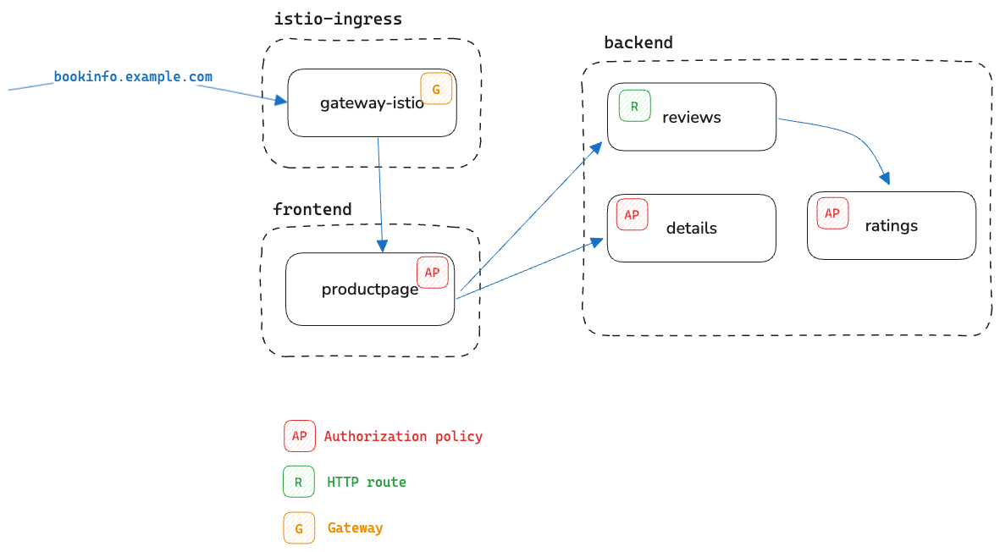

Setup
The objective of this activity is to construct an initial state, where:
- Istio is installed in sidecar mode.
- The sample application,
bookinfo, is deployed with sidecars. - An ingress gateway is deployed, and configured to route requests to the
productpageservice. - A set of L4 and L7 authorization policies are in place and functioning.
- A traffic policy is in place that routes all requests for the
reviewsservice to thereviews-v3workload.

You will find all referenced artifacts in the accompanying GitHub repository.
Provisioning a Kubernetes cluster
Feel free to provision a Kubernetes cluster of your choice, locally or in the cloud.
The following snippet installs a local Kubernetes cluster with k3d. For more information, see here.
k3d cluster create my-cluster \
--api-port 6443 \
--k3s-arg "--disable=traefik@server:0" \
--port 80:80@loadbalancer \
--port 443:443@loadbalancer
Install Istio in sidecar mode
Per the instructions for installing Istio in sidecar mode with Helm:
Configure the Helm repository:
Install the Istio CRDs:
helm install istio-base istio/base -n istio-system \
--set defaultRevision=default --create-namespace
Install the Istio CNI:
About the global.platform flag
The global.platform flag is a requirement on specific platforms when installing the Istio CNI.
Install the istiod control plane:
Validate
Verify that both istiod and istio-cni pods are in Running state, in the istio-system namespace:
List the helm releases in istio-system:
Deploy bookinfo
In this scenario, the bookinfo services are split across two namespaces:
- the
frontendnamespace hosts theproductpageservice - the
backendnamespace hosts the services upstream from it:reviews,ratings, anddetails
Create the namespace:
Label the namespace for sidecar injection:
Apply the manifests:
Repeat for the backend namespace:
kubectl create ns backend
kubectl label ns backend istio-injection=enabled
kubectl apply -f artifacts/bookinfo-backend.yaml -n backend
Validate
Verify that all pods have two containers, implying that the sidecar injection took place:
To help verify that the services are functioning, deploy a curl image to the cluster:
kubectl apply -n frontend -f https://raw.githubusercontent.com/istio/istio/refs/heads/master/samples/curl/curl.yaml
Make a test call to the ratings service:
Call the reviews service:
Finally, call the productpage service:
Make sure the calls succeed.
Configure an ingress gateway
We have the option to use either the older Istio-specific method of statically provisioning a gateway with Helm, or the Kubernetes Gateway API which allows for the dynamic provisioning of gateways.
We opt for the latter.
Install the Kubernetes Gateway API standard channel CRDs:
kubectl apply -f https://github.com/kubernetes-sigs/gateway-api/releases/download/v1.3.0/standard-install.yaml
Create the namespace where the Gateway is to be provisioned:
Review the Gateway configuration:
| gateway.yaml | |
|---|---|
The gateway is configured to allow the binding of routes defined in the namespace frontend.
Apply the Gateway resource:
Next, define an HTTPRoute to expose specific endpoints on the productpage service through the gateway:
Apply the HTTPRoute:
Validate
Capture the external IP address of the Gateway:
export GW_IP=$(kubectl get gtw -n istio-ingress gateway \
-ojsonpath='{.status.addresses[0].value}')
Make a curl request to the ingress gateway using the configured hostname bookinfo.exmaple.com:
Configure authorization policies
You will apply three AuthorizationPolicy resources that establish the following policy:
- Only the ingress gateway should be able to make requests to the
productpageservice. - Only
reviewsworkloads can call theratingsservice. - Only
productpagecan make calls to thedetailsservice.
Furthermore:
- The first policy will be a layer 4 policy that is concerned strictly with workload identity.
- The remaining policies have layer 7 aspects that allow only specific HTTP methods (for example, GET or POST).
Review all three policies:
| productpage-authz.yaml | |
|---|---|
Note how the identity of the allowed caller is specified via the Istio spiffe id which is a function of the workload's location (namespace) and service account.
| ratings-authz.yaml | |
|---|---|
| details-authz.yaml | |
|---|---|
Apply all three policies:
Validate
-
A request from an unauthorized workload to the
productpageservice should be denied: -
A request from an unauthorized workload to the
ratingsservice should be denied:It should produce a
HTTP/1.1 403 Forbiddenresponse. -
A request from an unauthorized workload to the
detailsservice should be denied: -
A request through the ingress gateway to product page and upstream should succeed:
Configure traffic policies
When productpage makes requests against the reviews service, the requests are load-balanced across all three versions of the service.
Verify this by making several requests to the productpage service and "grepping" for the keyword "reviews-":
Review the following traffic policy which will route all requests to reviews-v3:
| route-reviews-v3.yaml | |
|---|---|
Apply the policy:
Validate
Verify that all requests are routed to reviews-v3 by making repeated calls to productpage:
Summary
We have configured our initial state: a system of microservices functioning with Istio in sidecar mode, with a combination of L4 and L7 security policies, and a traffic policy applied to the reviews service.
In the next section, we will work on migrating this system to Istio ambient mode.